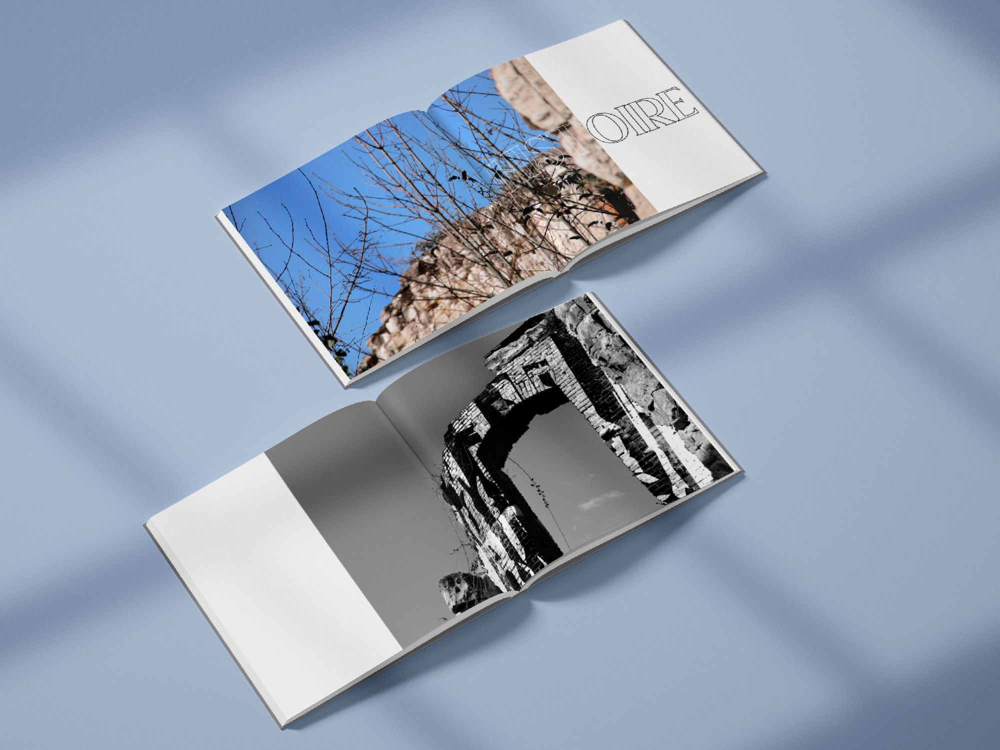

Les ruines sont des vestiges du passé. Ce sont les traces restantes de bâtiments, autrefois entiers, qui se sont dégradés à travers l’histoire. En mêlant photographie et dessin, ce projet créé un pont entre les édifices d’autrefois et les ruines visibles aujourd’hui. Les formes dessinées proviennent des plans des edifices tels qu’ils étaient à leur construction. Elles permettent d’ajouter une indication sur ce qu’étaient ces ruines pour se projetter dans l’histoire de nos paysages.
